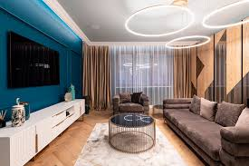
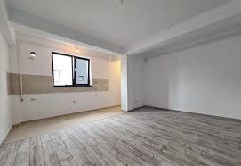
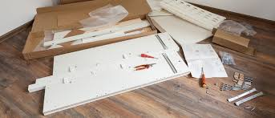
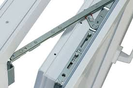
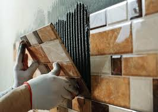
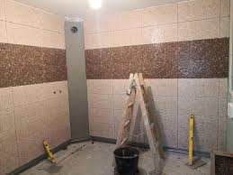
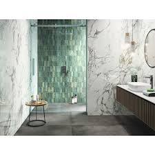
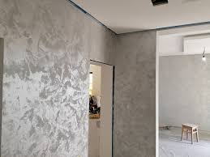
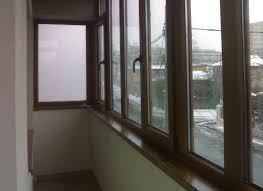

Nu stii care este stilul potrivit pentru casa ta?
Arunca o privire mai jos si vei gasi solutia!
Description
Bine ați venit pe PlaCo Design Interior!
Models
Zugraveli si amenajari interioare
Au desenat cei mici în afara caietului și ai de văruit o cameră sau numai un perete?
Vrei să înlocuiești patru plăci de gresie care s-au spart sau să pui o faianță nouă în baie?
Te-ai săturat de glafurile pe care nu-ți poți pune cafeaua?
Ești exact unde trebuie. Ne va face plăcere să te ajutăm în luarea deciziilor potrivite, în estimarea corectă a necesarului de lucru și în finalizarea rapidă a lucrării. Venim cu drag să restabilim aspectul plăcut în spațiul dorit.

Reparatii si montaj mobilier
Îți iubești bucătăria vintage însă nu mai ai niciun sertar care să se închidă corect?
Ți-a ajuns toată mobila din dormitor însă continui să dormi doar pe saltea fiindcă nu are cine să o monteze?
Vrei să mai adaugi rafturi în dressing?
Descoperă că este mult mai rapid, mai ușor și mai liniștitor să pui lucrurile la punct alături de o echipă de profesioniști.
Îți vom asculta cu atenție indicațiile, nu te vom pune să numeri piulițe și nici să strângi ambalaje sau resturi după noi.

Reparatii si reglaje tamplarie PVC si aluminiu
Contează pe echipa noastră când nu mai poți ieși/intra în casă, când vine momentul de schimbat yale, reparații închideri și mânere stricate la uși sau la ferestre, montaj plase anti țânțari, rulouri, jaluzele și paravane solare.
Într-o lume cu multe variabile, noi lucrăm la milimetru. Dar stai fără grijă, venim să luăm măsurile corecte, cu toate instrumentele necesare la noi și nu te punem pe drumuri și căutări istovitoare în magazinele de construcții.

Placari gresie si faianta
Atunci cand vine vorba de a alege o echipa de mesteri in montaj gresie si faianta, seriozitatea nu trebuie deloc compromisa. Lucrarile de montaj gresie si faianta implica atentie si experienta, iar acestea se pot observa, cu ochiul liber, in produsul final.
Executam lucrari de placari gresie si faianta in spatii rezidentiale si nerezidentiale. Ne bazam pe experienta acumulata de-a lungul anilor si va asiguram de calitatea lucrarilor noastre de placari gresie si faianta.
Suntem specialisti in montaj gresie si faianta, astfel ca niciun proiect nu ne pune in dificultate, ceea ce inseamna ca ne putem focusa 100% pe multumirea clientului.

In cazul in care va sunt necesare si alte amenajari exterioare ce nu au fost mentionate anterior si doriti ca realizarea lor sa fie facuta de catre firma noastra, va asteptam sa ne expuneti ceea ce ati dori sa realizam, iar noi vom stabili daca va putem fi de ajutor. Dar, avand in vedere ca suntem o firma de constructii formata din profesionisti adevarati in constructii, va putem aproape garanta ca va vom putea realiza orice lucrari ce tin de amenajarile exterioare.
Photos
  
Recenzii de la clienții noștri:
"Colaborarea cu PlaCo InteriorDesign a fost o plăcere! De la început până la sfârșit, au gestionat proiectul nostru cu profesionalism și expertiză. Echipa a fost punctuală, bine informată și a finalizat lucrarea înainte de termen. Casa noastră se simte mai frumoasă și mai primitoare datorită serviciului lor de primă clasă. Recomandăm cu încredere!"
"Nu pot să spun decât lucruri bune despre PlaCo InteriorDesign. Au transformat spațiul nostru interior într-o operă de artă modernă. Atenția lor la detalii și angajamentul față de calitatea meșteșugului a fost evident pe tot parcursul procesului. Comunicarea a fost excelentă, iar întotdeauna au fost disponibili să abordeze orice îngrijorare. Suntem încântați de rezultate și nu am ezita să-i angajăm din nou pentru proiecte viitoare."
"Recent am angajat PlaCo InteriorDesign pentru un proiect complex de renovare interioară, și nu am putea fi mai fericiți cu rezultatul. De la consultația inițială până la inspecția finală, echipa lor a demonstrat profesionalism și pricepere. Au depășit așteptările pentru a asigura că totul a fost realizat corect și au oferit chiar și sfaturi valoroase de întreținere. Acum, casa noastră strălucește și suntem recunoscători pentru serviciul lor excepțional. Mulțumim, PlaCo InteriorDesign!"
Contact
Tel: 0712 345 678
Facebook: PlaCo InteriorDesign
email: placoInterior@mail.com